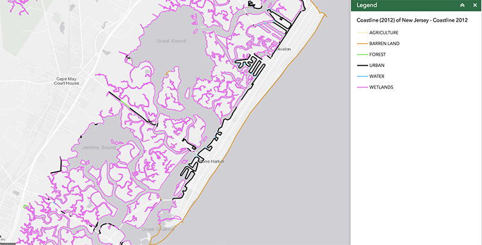

There are boundaries that exist in the imagination, those that are created based on national ideologies, and those that are geographical in nature. These seem to be definitive categories but are in fact intertwined in complex and dynamic manners. A shoreline, for instance, is a continually shifting thing – it shifts in time and space as well as memory, and sometimes construction. The pace of this shifting is determined by the forces which act upon it – the wear of a long-standing system of currents, the rising seas, synthetic building of beaches and shores. Pulse is a visualization of these shifts.
During a conversation, Adam and Monika discovered they had both spent summers on the Jersey Shore. This then gave a specificity to the general subject of shores, erosion, the hardening of wetlands (and resultant reduction of sponge-like regulating porous areas between oceans and land), and structures built in attempts to counteract the rising and increasingly raging seas as well as determined a location to seek data from.
The Coastline 2012 of New Jersey dataset used for this project was created by extracting water polygons which represented rivers, bays and oceans from the 2012 land use/land cover (LU/LC layer of the New Jersey Department of Environmental Protection geographical information systems (GIS) database.

The majority of descriptive information contained within the classification system applied to this dataset relates to the original source layer integrated with the USGS National Hydrography Dataset information.
The U.S. Geological Survey Coastal and Marine Geology Program Interactive Map was very useful in visualizing and exploring the dataset used for this project.